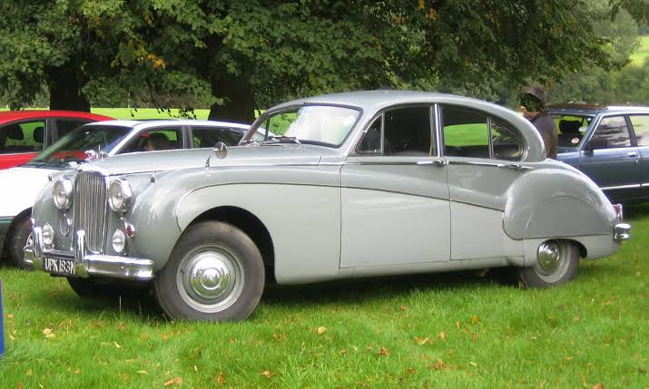
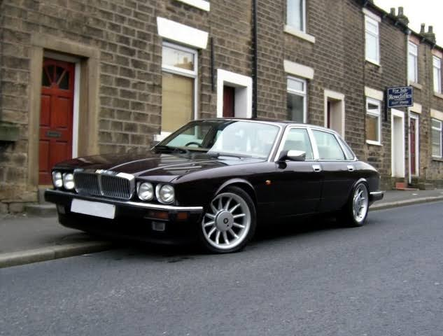
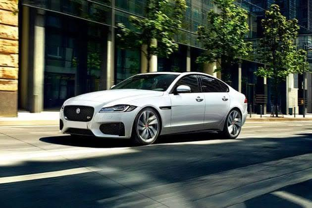

| Company name | Jaguar Cars |
|---|---|
| Founder | William Lyons & William Walmsley |
| Founded on | 4 September 1922, Blackpool, United Kingdom |
| Headquarters | Coventry, United Kingdom |
| Parent organization | British Leyland, Ford Motor Comapany,Tata Motors |
| Chairman | Ratan Tata |
| CEO | Ralf Speth |
| No.of production plants | 5 |
| Customer service | 1800 121 6808 |
Jaguar started out as the Swallow Sidecar Company, which was founded in 1922 by William Lyons and William Walmsley. Both were motorcycle enthusiasts and the company manufactured motorcycle sidecars and automobile bodies.However, Walmsley sold out in 1934 in order to buy the Swallow business. Lyons then formed S.S. Cars Limited. They found new capital by issuing shares to the public.Their first model as an SS 2 ½ -litre sports saloon. A matching model was an open two-seater sports model, of which was named as the SS Jaguar 100.
In 1950 Jaguar agreed to lease the Daimler Shadow 2 factory from the Ministry of Supply. They were still supplying raw materials to companies at this point, as it wasn’t too long after the Second World War.Jaguar then purchased Daimler in 1960 from BSA. Jaguar used the Daimler marque as a brand name for their most luxurious saloons throughout the late 1960s. This is not to be confused with the Daimler brand.
On January 1st 2008, Ford formally announced Tata Motors were to buy Jaguar from Ford. In March of the same year, it was reported that Citigroup and JP Morgan would finance this deal with a $3 billion loan.Jaguar and Land Rover were sold to Tata Motors of India in March 2008, and the sale was expected to be complete a few months later. They also had the rights to Daimler, as well as Lanchester and Rover, both of which are dormant brands.
